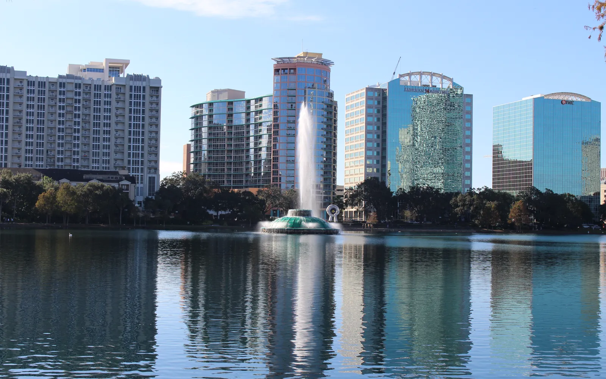

Em Orlando, as casas à venda vão de apartamentos perto do lago Eola, no centro, até casas em bairros como College Park, Baldwin Park e Lake Nona. Os preços são mais baixos que nas cidades do litoral do sul da Flórida, mas uma regra pega muita gente de surpresa: dentro dos limites da cidade de Orlando, não dá para alugar a casa inteira por menos de 30 dias. A maioria das casas de férias da região fica em condomínios planejados fora da cidade, principalmente no condado de Osceola. O escritório do Rui Cunha, corretor brasileiro, fica em Coral Springs, e ele atende clientes em toda a Flórida, incluindo a região de Orlando.
Como é morar em Orlando
Orlando é a maior cidade da Flórida Central e a sede do condado de Orange. O órgão de estatística do estado (EDR) estimou a população em 334.496 habitantes em abril de 2024, alta de 2,5% em um ano (Florida EDR).
O turismo move boa parte da economia. A Visit Orlando registrou o recorde de 76,7 milhões de visitantes em 2025, e o Brasil foi o terceiro maior mercado internacional da região, com cerca de 736,3 mil visitantes (Visit Orlando, maio de 2026).
A comunidade brasileira em Orlando
Orlando é um dos grandes polos brasileiros da Flórida, ao lado do sul do estado:
- Estimativas da comunidade. Em 2023, o Consulado do Brasil e a Câmara de Comércio Brasileira estimaram cerca de 200 mil brasileiros na Flórida Central, uns 60 mil no condado de Orange e uns 30 mil na cidade de Orlando, segundo a WFTV. Na mesma época, a polícia de Orlando criou uma academia cidadã em português (WFTV, julho de 2023).
- Dado do Census. A pesquisa American Community Survey (2020–2024) contou cerca de 10,3 mil moradores da cidade nascidos no Brasil (Census ACS via Census Reporter). O número é menor porque conta só os imigrantes, não os filhos nascidos aqui, e líderes da comunidade dizem que o Census subestima essa população (Florida Connexion). O condado de Orange está entre os condados dos EUA com mais imigrantes brasileiros (Migration Policy Institute, 2026).
- Consulado. O Brasil transformou o vice-consulado de Orlando em consulado-geral em 2023 (Panrotas).
- MetroWest. Esse bairro no sudoeste de Orlando é há anos um ponto de chegada de famílias e empreendedores brasileiros, com restaurantes, açougues e padarias brasileiras na região da South Hiawassee Road (Florida Neighborhood Realty, maio de 2026).
Se você já mora aqui e ainda não tem Social Security, existe o financiamento com ITIN, sempre sujeito à aprovação do banco.
Bairros e comunidades
Um guia para investidores de março de 2026 destaca estas áreas (Ark7):
- Downtown Orlando. Apartamentos em volta do lago Eola, com restaurantes, vida noturna e muitas obras novas.
- College Park. Ruas arborizadas e comércio local, perto do centro.
- Baldwin Park. Bairro planejado, bom para famílias, com vários tipos de imóvel.
- Lake Nona. Área que cresce rápido no sudeste, com construções novas e foco em saúde e tecnologia.
- Winter Park. Outra cidade, logo ao norte de Orlando, com ruas de tijolinho, vida cultural e preços mais altos.
Muitos endereços "de Orlando" ficam, na verdade, na área não incorporada do condado de Orange ou em outras cidades, e isso muda as regras de aluguel, os impostos e os serviços. O Rui confirma isso para cada endereço.
Mercado imobiliário em Orlando
Pela análise da Momentum Realty com dados do MLS da Flórida, a mediana de venda em Orlando estava em cerca de US$ 415 mil, 2,4% abaixo do ano anterior, com os imóveis levando uns 42 dias para fechar contrato e cerca de 4,2 meses de estoque (Momentum Realty, outubro de 2026).
Na região metropolitana (condados de Orange, Osceola, Seminole e Lake), a Florida Realtors registrou mediana de US$ 439 mil para casas em agosto de 2026, queda de 0,6% em um ano (Florida Realtors). Peça ao Rui as vendas recentes do tipo de imóvel que você quer.
Cuidados práticos: temporada, enchente, seguro e impostos
Aluguel por temporada dentro da cidade. Pelas regras da cidade de Orlando, o proprietário não pode alugar a casa inteira por 1 a 29 dias. Quem mora no imóvel pode se registrar para alugar até metade dos quartos ("home share"), e o aluguel comum, de 30 dias ou mais, é permitido (fact sheet da cidade de Orlando, agosto de 2021). A área não incorporada do condado de Orange tem regras próprias de licença. Se o plano é ter casa de férias para alugar por diária, o caminho costuma ser um condomínio com zoneamento para isso, principalmente em Osceola. Veja o guia de Kissimmee e o de aluguel por temporada na Flórida.
Enchente e seguro. Orlando fica no interior e não tem ressaca do mar, mas chuva forte ainda alaga áreas baixas. Em 2022, o furacão Ian provocou enchentes e resgates em partes da Flórida Central (Central Florida Public Media). Confira a zona de enchente de cada endereço e faça a cotação do seguro. Quem tem seguro pela Citizens, a seguradora estadual, vai precisar de cobertura contra enchente, exigência que entra aos poucos até 2027 (News4JAX).
Apartamentos. As leis de segurança de condomínios valem no estado todo: prédios de três andares ou mais precisam de inspeções periódicas e de estudo de reservas estruturais, com reservas financiadas (SB 154, 2023; Rimkus). Peça o estudo de reservas, o orçamento e o histórico de cobranças extras.
Impostos. A isenção homestead é só para quem faz do imóvel sua residência principal. Casa de férias, imóvel alugado e quem mora no Brasil não têm esse benefício. Converse com um contador, aqui e no Brasil, sobre o seu caso.
Escolas
A maior parte de Orlando é atendida pelas escolas públicas do condado de Orange (Orange County Public Schools). Confirme a escola de cada endereço no site do distrito e consulte as notas no site do Departamento de Educação da Flórida.
Como se locomover e voos do Brasil
Em Orlando, quase tudo se faz de carro, pela I-4, pela Florida's Turnpike e por rodovias com pedágio. O aeroporto internacional (MCO) tem estação do Brightline, com trem para West Palm Beach, Fort Lauderdale e Miami (Brightline). Para quem vem do Brasil, a LATAM anunciou para junho de 2026 14 voos semanais de Guarulhos para Orlando (Pontos pra Voar, out/2025). Confira as rotas atuais antes de decidir com base nisso.
Comprar com o Rui em Orlando
O Rui trabalha com imóveis na Flórida desde 2003, primeiro como mortgage broker e depois como broker e General Contractor licenciado, o que ajuda na hora de comparar uma casa usada com uma construção nova ou de avaliar a situação de um prédio. Ele ajuda você a comprar casa na Flórida ou, se você mora no Brasil, a investir na Flórida. Faça as contas, com impostos, seguro e HOA, na calculadora de financiamento e, em dúvida entre regiões, leia Orlando, Miami ou Fort Lauderdale.
Perguntas frequentes
Quanto custa uma casa em Orlando?
Cerca de US$ 415 mil na cidade (Momentum Realty, outubro de 2026), 2,4% abaixo de um ano antes. Na região metropolitana, a mediana das casas foi de US$ 439 mil em agosto de 2026 (Florida Realtors).
Posso colocar minha casa de Orlando no Airbnb?
Dentro da cidade de Orlando, não dá para alugar a casa inteira por menos de 30 dias. As casas de férias alugadas por diária ficam, em geral, em condomínios com zoneamento para isso, principalmente em Osceola.
Quantos brasileiros moram em Orlando?
Não existe um número exato. Em 2023, o Consulado e a Câmara de Comércio Brasileira estimaram uns 30 mil na cidade e cerca de 200 mil na Flórida Central. O Census, que conta só imigrantes, registrou cerca de 10,3 mil moradores da cidade nascidos no Brasil (2020–2024).
Comprar casa em Orlando dá green card?
Não. Comprar imóvel não dá direito a visto nem a green card. Veja comprar imóvel nos EUA dá green card?.
Dá para comprar casa em Orlando sem Social Security?
Muitos compradores usam o financiamento com ITIN, sempre sujeito à aprovação do banco. Veja o guia de financiamento com ITIN ou fale com o Rui.
Fale com o Rui
Pensando em Orlando para morar ou para casa de férias? Peça ao Rui uma comparação atualizada das vendas recentes.